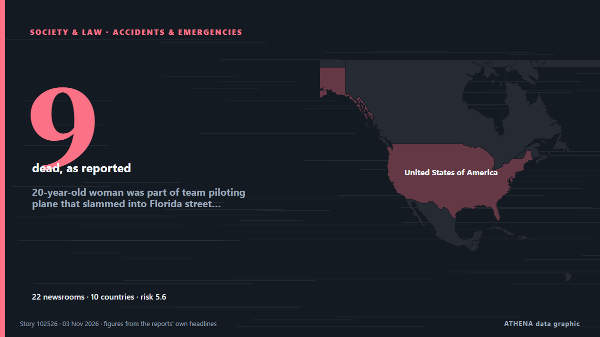

Sociedad, derecho y políticas públicas
PatrocinadoPresentado por  Cybernetics and Artificial Intelligence Lab Welcome to the Cybernetics and Artificial Intelligence Laboratory, established at the Department of Business Administration of the National
Cybernetics and Artificial Intelligence Lab Welcome to the Cybernetics and Artificial Intelligence Laboratory, established at the Department of Business Administration of the National
Los titulares se muestran en inglés, tal como se publicaron.

Accidentes y emergencias20-year-old woman was part of team piloting plane that slammed into Florida street killing 9
Nathalia Filgueiras was co-piloting the Learjet 60 from Texas to the Bahamas when it crashed in Florida on Sunday. de The Independent
| 21 oct | 115 |
|---|---|
| 22 oct | 222 |
| 23 oct | 188 |
| 24 oct | 120 |
| 25 oct | 131 |
| 26 oct | 318 |
| 27 oct | 310 |
| 28 oct | 291 |
| 29 oct | 261 |
| 30 oct | 299 |
| 31 oct | 152 |
| 1 nov | 174 |
| 2 nov | 210 |
| 3 nov | 12 |
4 Americans and 1 Canadian among the 69 dead in Spain’s train collision
Four Americans and one Canadian were among the 69 people killed in last week's high-speed train collision in Spain, authorities said. de The Canadian Press (via CityNews)
Spanish authorities identify all 69 victims of train crash, including 2 Japanese nationals
The victims include 54 Spanish nationals and 15 foreigners. de The Straits Times
France launches 'attempted murder' probe after petrol bomb attacks on security forces
PARIS: France on Sunday launched an attempted murder probe after petrol bombs were thrown at security forces during Paris protests, as footage of an officer in flames sparked outrage. de New Straits Times
Martha Stewart says she ‘really screwed up’ with homeless Halloween costume
Stewart appeared dressed as a homeless person, holding a sign that read "I AM HUNGRY HELP ME!!" In the post's caption, she promoted her candle collection. de RNZ National
French school protests resume on smaller scale as students return from break
Police present, though not in full anti-riot gear as youth try to blockade high schools in Paris, Marseille, Rennes. de Express Tribune
Judge Dismisses Trump's $10 Billion Lawuit Against Wall Street Journal Over Epstein Letter
Trump had sued for $10 billion after the newspaper's story was published in July 2025 detailing the president's alleged 2003 letter to Epstein, which apparently featured a drawing of a naked woman. de NDTV
US judge tosses case against ex-FBI officials accused of lying about Hunter Biden probes
US Magistrate Judge Zia Faruqui dismissed the case at a remarkably early stage, finding that prosecutors had not shown sufficient evidence that the two officials knowingly made false statements. de The Jerusalem Post
Bahamas-Bound Jet Crashes in Florida, 9 Dead
A USD$2 million business jet carrying nine people has crashed in Florida. de Sydney Morning Herald
Seven migrants die in seas off Spain's Canary Islands
MADRID, Nov 2 - At least seven migrants died off Spain's Canary Islands while more than 380 people were rescued on Monday, the country's maritime rescue services said. de The Straits Times
Ukrainian human rights chief on talks with Russian counterpart: "I know no other way to bring back our citizens"
Dmytro Lubinets, Ukrainian Parliamentary Human Rights Commissioner, has explained why he maintains diplomatic etiquette in negotiations with his Russian counterpart, Yana Lantratova. de Ukrainska Pravda (English)
Rachin Ravindra, Mark Chapman ruled out of New Zealand’s ODI series vs India
Coach Rob Walter says Ravindra is fine to bat, but the risk of diving on his recovering shoulder rules him out of the five-match India series. de Stuff
Russia Officially Withdraws From Europe’s Anti-Torture Convention
Russia ratified the anti-torture treaty in 1998, two years after joining the Council of Europe. de The Moscow Times
German ministers vow tough response to Frankfurt riots and looting
FRANKFURT/PEISSENBERG, Germany, Nov 1 - German ministers threatened tough penalties for looters and rioters who damaged stores and injured more than 100 police officers in Frankfurt overnight, while… de The Straits Times
Brussels sides with Donald Tusk in Poland’s court crisis
The confrontation has attracted a response from France's Marine Le Pen and Slovenia's Janez Janša. de Euractiv
Plaka Explosion: How a Copper Pipe Theft Led to Six Deaths
Security footage has helped investigators reconstruct the movements of three suspects accused of stealing a gas pipe from an Athens building, triggering a leak that led to a devastating explosion… de to vima
French protest violence eases as scattered riots hit Germany
Police expect new demonstrations as schools at the heart of the movement reopen on Monday. de The Irish News (Belfast)
Japan calls on U.S. military to strengthen discipline after arrest of another U.S. Marine
The latest arrest took place on Saturday, according to media reports. de CNA (Channel NewsAsia)
Third weekend of protests in France as youth-led rallies sweep Europe
The Interior Ministry told reporters that 70,000 people are estimated to have turned out for the main protest in Paris. de The Irish News (Belfast)
Poland’s PM vows support for tribunal amid court crisis
Riot police have been guarding the court since Friday afternoon, with several hundred protesters gathered to demand the reinstatement of the president of the country’s Constitutional Tribunal. de Sydney Morning Herald
Boy, 14, hands himself in to police after Bradley Lowery used in sickening taunt in Coventry vs Sunderland
Bradley Lowery died aged six from neuroblastoma. de Manchester Evening News
Rioters loot stores in Frankfurt as Gen Z-led protests in Germany turn violent
FRANKFURT/BERLIN: Hooded rioters looted stores in Frankfurt late on Saturday after tens of thousands of demonstrators took to the streets across Germany’s biggest cities to demand better education… de Arab News
Police with assault rifles begin Sydney patrols in wake of Bondi attack
SYDNEY: A new police unit armed with military assault rifles has begun patrolling the streets of Sydney, in an Australian-first measure set up in response to the Bondi Beach attack last December. de Business Recorder
French school blockades to restart from Monday: Student group
France's protest movement against soaring prices emerged from weeks of demonstrations by high school students protesting deteriorating learning conditions and inequality. de CNA (Channel NewsAsia)
New York City Mayor Mamdani secures Trump’s approval for visa for mother of slain Ghanaian teenager in Bronx
The mother of 15-year-old Ghanaian student Javits Frimpong, who was fatally shot while walking to school in New York, will be granted a visa to travel to the United States following an intervention… de MyJoyOnline
UK police say 325 people were arrested at Palestine Action demo
British police arrest 139 Palestine Action supporters in London and Edinburgh ahead of a Supreme Court appeal challenging the UK government's ban. de The New Arab
Thousands of volunteers build 108 stupas in a day in Bhutan's Gelephu Mindfulness City
Buddhist masters have gathered in Gelephu, Bhutan, to witness the construction of 108 stupas in a single day. de ABC News (International)
Multiple shootings on Halloween leaves 4 dead, 15 injured
At least 3 victims remain in critical condition following shooting at Fairfield mall, as police search for suspect. de Express Tribune
Portuguese police clash with housing protesters, arrest 13
Riot police clashed with housing protesters in Lisbon and Porto, arresting 13 and injuring several demonstrators. de Arab News
USA Clock Change: Daylight Saving Time Ends November 1
Most of the United States will turn clocks back one hour on Sunday, November 1, restoring the usual winter time difference with Greece after a week in which the gap was one hour smaller. de Greek Reporter
Police probe Jeffrey Epstein’s time spent at Balmoral with Andrew Mountbatten-Windsor
Scottish police are investigating the time convicted sex offender Jeffrey Epstein spent with Andrew Mountbatten-Windsor at Balmoral, a private royal estate in Scotland which is a favored retreat for… de Egypt Independent
Poland's Constitutional Court crisis deepens as judges allege coup attempt
Poland has been plunged into a constitutional confrontation after police entered the Constitutional Tribunal and its president was reportedly suspended from office, prompting allegations of a coup… de AzerNews
France deploys 70,000 police officers to prepare for new wave of protests on Halloween
Emmanuel Macron's government deploys 70,000 police officers as France braces for a third week of intense protests amid over $1 billion in losses. de Fox News (World)
Police clear new Lisbon housing protest camp after thousands rally
LISBON, Nov 1 - Police moved into Lisbon's Rossio Square on Sunday to clear a tent camp erected after thousands marched demanding Portugal's minority centre-right government withdraw a rental bill… de The Straits Times
Polish president calls crisis talks after court standoff
Karol Nawrocki cut short a trip to Senegal and returned to Warsaw. de Euractiv